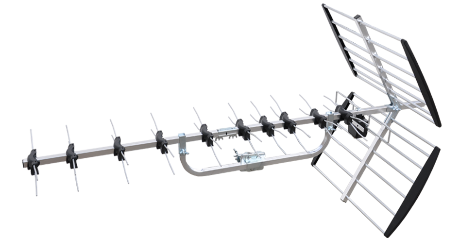

HD & Freeview
Freeview HD delivers crystal-clear high-definition TV using your existing aerial, offering sharper picture quality and improved sound without any monthly subscription. With new hybrid platforms such as Freely, you can now combine traditional terrestrial broadcasts with online streaming for even more content options.
What You Need for Freeview HD
- HD-ready TV with a Freeview HD tuner – most modern TVs support this.
- DVB-T2 reception – essential for HD channels such as BBC One HD, ITV HD, and Channel 4 HD.
- Good aerial signal – a properly aligned and installed digital aerial ensures the best HD performance.
- Regular retuning – keeps your channel list updated as new channels and services launch.
Freely & Hybrid TV Options

Freely brings live channels and on-demand content together using both your aerial and your internet connection. This means:
- Access to live Freeview channels even with a weak signal (online fallback).
- No subscriptions required — just connect your TV to Wi-Fi.
- A unified, modern TV experience across live and catch-up content.
Recommended Setup Tips
- Position your aerial for the strongest local transmitter.
- Use a high-quality coaxial cable to reduce interference.
- A powered amplifier may help in weak-signal areas (but isn’t always required).
- Enable “Automatic Updates” on your TV to keep channels and apps current.
Our Services
We offer full installation and upgrade options to ensure you get the best possible HD and Freeview performance:
- New digital aerial installation
- Freeview HD setup and tuning
- Freely setup and configuration
- Full home signal testing and troubleshooting
- Advice on the best HD receivers and set-top boxes
If you're experiencing signal issues, missing channels, or want to upgrade to the latest HD/Freely equipment, our engineers can help. Contact us today for a free quote.